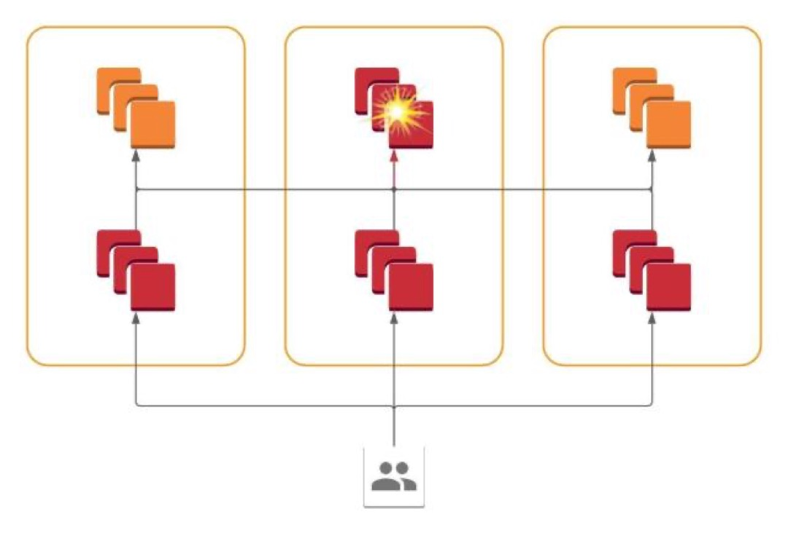

本期速览
01 QuePaxa 无主共识降尾延迟
02 FFmpeg 9.1 AAC 编码器重写
04 OpenAI 公开模型蒸馏指控
05 Pi Bot 开源本地多 Bot 协作
01｜QuePaxa 无主共识降尾延迟
来源（X） · @mylifcc · 2026-11-21 11:01
但当你的集群像 Cloudflare 的全球控制平面一样，物理节点分散在地球两端的不同大洲、跨洋光纤的物理光速往返延迟（RTT）动辄高达 150 到 250 毫秒时，传统单 Leader 共识算法的软肋就会暴露无遗：离 Leader 远的大洲每次写操作都要硬扛跨洋延迟；一旦跨洋海缆抖动触发重新选举（Leader Election），整个控制平面就会陷入恼人的可用性停顿。
近期 Cloudflare 工程团队正式揭秘了他们自研并已在生产环境落地的全新共识算法——QuePaxa。
QuePaxa 走了一条极具突破性的无主化（Leaderless）与对称多提议者（Multi-Proposer）路线：全球任何一个区域的节点都可以直接就近接收并提议状态变更，无需先向大洋彼岸的单一主节点请示；针对最棘手的多节点并发写入冲突，QuePaxa 通过确定性的偏序合并与自适应时隙调度，彻底消除了传统 Paxos 在并发争用下的“活锁（Dueling Proposers）”开销，在广域网高延迟与高丢包环境下实现了极低的尾延迟（P99）与零切主抖动。

02｜FFmpeg 9.1 AAC 编码器重写
来源（X） · @don_tech1 · 2026-11-21 20:30
我看了这次更新日志，最牛逼的一条，直接解决了开发者折腾了十几年的老噩梦：
它自带的原生 AAC 编码器，终于脱胎换骨了。
以前用 FFmpeg 压视频、做直播推流，最难受的就是自带 AAC 音质拉胯。你想要好音质，要么顶着开源协议冲突自己动手编译 fdk-aac，要么跨平台折腾苹果的 qaac，纯纯的编译地狱。
这次 9.1 彻底重写了底层算法，社区实测和听感测试直接追平甚至反超了 fdk-aac 和 qaac。
一句话总结：以后不用再为了好音质去碰非自由协议的外部库了，开源、免费、开箱即用。
https://ffmpeg.org/download.html#release_9.1
03｜rea v6.10 提升逆向可靠性
来源（X） · @goan999999 · 2026-11-21 07:22
最让我高兴的，以后逆向研究项目，再也不用天天担心 Codex 和 Claude 封号影响干活了！
大肥鱼 rea v6.10 正式上线！
124 名贡献者，累计合并 1380 多个 PR，这次更新真有点东西！
以前搞 AI 编程，最头疼的就是太依赖某个平台
Claude 一封号，项目直接卡住
Codex 一限额，开发进度又得往后拖
现在有了 rea + DeepSeek Harness，就可以多一条路，不用把所有希望都押在一个账号上！
而且 rea 主打的就是 Reverse Engineer Anything，逆向工程一切！
不仅能辅助分析代码、理解项目架构，还能研究二进制程序和软件运行逻辑
这次 v6.10 还修复了大量 Bug，让 DeepSeek Harness 重新可用，同时提升文件类型和固件处理的可靠性！
兄弟们，这可是天大的进步啊！！
GitHub：https://github.com/morluto/rea
安装命令：
npx rea-agents setup
大肥鱼这波，属实又给 AI 开发者送了一份大礼！
04｜OpenAI 公开模型蒸馏指控
来源（X） · @Xudong07452910 · 2026-11-21 08:40
它在新文章里直接点了名。2 月，OpenAI 向美国国会通报，发现 DeepSeek 在尝试蒸馏美国的前沿模型；9 月，它说拦下了一起专门套取推理过程的行动，并把其中核心部分归到和月之暗面（Kimi 背后的公司）有关的人员身上。文章还说，最近又拦下了几起，之后会公布更多。
OpenAI 担心的不只是知识产权。它的说法是，别人拿它的输出训练出能力相近的模型，却没有带上同样的安全限制，比如原模型会拒绝的网络攻击请求，蒸馏出来的模型可能就照做了。它还把这件事直接上升到了国家安全层面。
文章里有几个细节挺值得看:
OpenAI 每周封禁的蒸馏账号，从几千到几万个不等，今年夏天明显变多。
它们最想守住的是模型的思维链。内部实验发现，用完整推理过程训练出来的小模型，能力明显强过只用摘要训练的
GPT-6.2 Astra 加了新防护以后，从历史对话里套出推理过程的成功率，从 54% 降到了 0.2%。
目前这些指控目前都来自 OpenAI 单方面，具体是怎么判定的，外界还看不到。不过有一点比较明确，靠蒸馏追赶的路会越来越难走。
https://openai.com/index/combatting-adversarial-distillation/
05｜Pi Bot 开源本地多 Bot 协作
来源（X） · @geekbb · 2026-11-21 20:40
引用内容
it_works @it_works_123
Pi Bot 是一个在你自己电脑上干活的 AI 团队：一群有名字的 Bot，可以私聊，也可以拉进群里分工，做计划、跑命令、改文件、互相交接。
从第一天起目的就是「大脑」跑在用户自己的电脑上：聊天、文件、记忆和密钥都留在本机，只有你选的模型服务商会看到你发出去的内容（追求极致数据隐私可使用自部署模型）。Bot 能调用的每个工具都要过同一套权限判断，有风险的步骤等你批准，命令在隔离环境里运行，审批和执行都记进本机的记录里，没有遥测。
代码在 GitHub，内核用的是 pi。macOS、Windows、Linux 都能用，另有安卓 App。欢迎提 issue 和 PR；官方角色和群组模板单独放在 pibot-roles 仓库，也欢迎一起完善。
明天会发 v0.0.3：群组能自己推进、随时暂停继续，Bot 做出来的文件一定送到对话里，Windows 安装包自带 Git，手机上也能看进度、暂停群组。
代码：https://github.com/w01fb0ss/PiBot
角色库：https://github.com/w01fb0ss/pibot-roles
下载：http://pibot.space